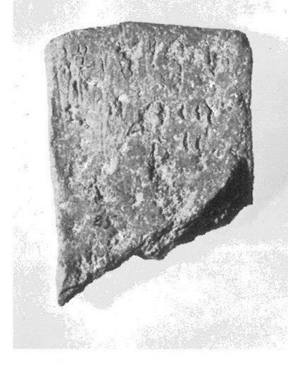
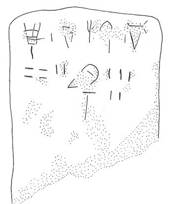

-
ZA1a
Names
Aliases for the inscription.
ZA1a, ZA 1a
Support
Type of Object.
Stone vessel
Location
Site where object was found.
Zakros
Findspot
Location at Site.
Unavailable


Scribe
Writer of Inscription.
Unavailable
Context
Approximate Date of Inscription.
Unavailable
Dimensions
Height x Length x Thickness.
[6.70]
4.90
4.20
cm
GORILA OCR
Catalogue
Museum Reference Number.
HM 85
Hiraklion Museum
Readings
1 1 0 *516 none
1 1 1 *900 none
1 2 2 KI none
1 2 2 RE none
1 2 2 ZA none
1 2 3 *900 none
1 2 4 NI none
2 2 5 40 none
2 2 5 2 none
2 2 6 ¹⁄₂ none
2 3 7 ZA none
2 3 8 5 none
Linear A Transcription
A Linear A transcription with words parsed separately.
Line breaks match the inscription.
𐛀𐄁𐘸𐘙𐘍𐄁𐘝
𐄓𐄈𐝆𐘍𐄋
ASCII Transcription
An ASCII transcription with words parsed separately.
Line breaks match the inscription.
*516*900KIREZA*900NI
402¹⁄₂ZA5
Linear A Tabulation
A Linear A transcription with words parsed separately.
Line breaks are logical, e.g. to represent a list.
𐛀𐄁
𐘸𐘙𐘍𐄁𐘝𐄓𐄈𐝆
𐘍𐄋
ASCII Tabulation
An ASCII transcription with words parsed separately.
Line breaks are logical, e.g. to represent a list.
*516*900
KIREZA*900NI402¹⁄₂
ZA5
ZA 1
, page tablet (HM 85) (GORILA I: 332-333) (House A, LM
IB)
Schoep
2002, type Ia (mixed
commodities)
|
side.line
|
statement
|
logogram
|
number
|
fraction
|
|
a.1
|
|
• I+[?] {*516} •
|
|
|
|
a.1-2
|
KI
-
RE
-
ZA
•
|
FIC
|
42
|
J
|
|
a.2
|
|
ZA
|
5
|
|
|
a.3-4
|
vacant
|
|
|
|
|
|
infra mutila
|
|
|
|
|
|
|
|
|
|
|
b.1
|
E-
MI
[
|
|
|
|
|
b.1-2
|
]
RO
|
GRA
|
4
7
|
|
|
b.3-4
|
vacant
|
|
|
|
|
|
infra mutila
|
|
|
|
Commentary © John Younger
References